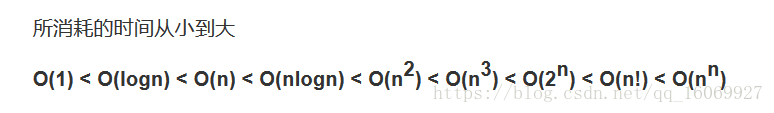

算法分析
衡量一个算法的优劣一般通过2方面来判断:1.时间复杂度,2.空间复杂度。也就是大概计算该算法执行所占用的内存和需要执行的时间。一般用函数O()来表示
任何算法永远不可能达到最优，只能是在优化的道路上一直前行。
Python基本数据类型的时间复杂度和空间复杂度
消耗时间排序

l = []
for i in range(20):
l.append(i)
for循环的时间复杂度是O(n),n是元素的个数,空间复杂度是O(n)
l = 20
while l>0:
l -=1
O(n)
l = 64
while l>0:
l = l//2
O(logn)
while循环的时间复杂度和内部条件有关。